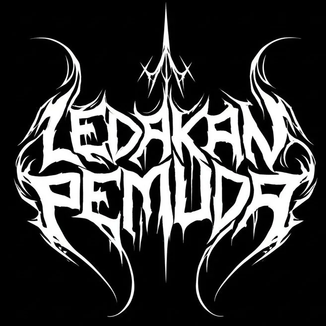
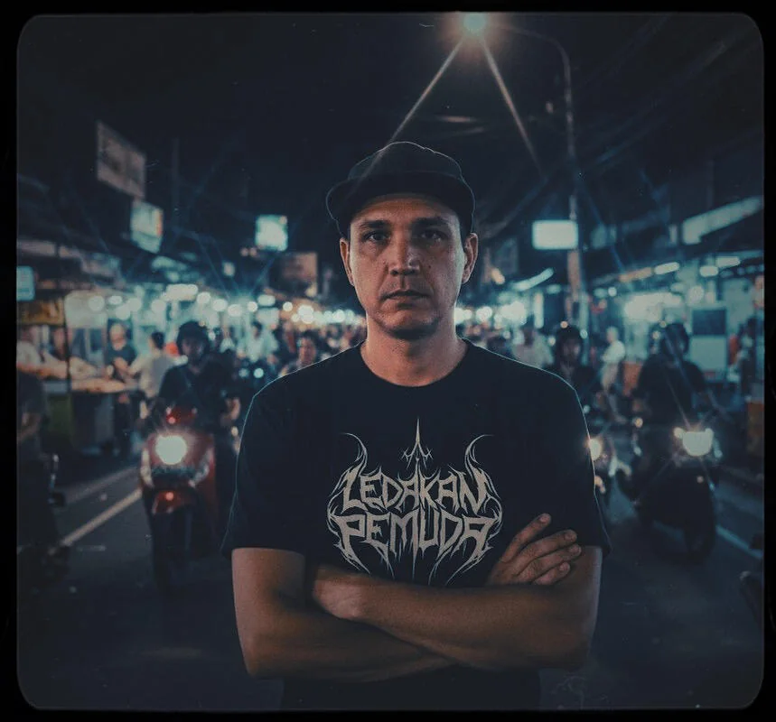

SESSION NOTES · REEL 01
Recorded in Jakarta. Finished six years later.

A project six years in the making, Ledakan Pemuda’s debut album, Korupsi, is a transatlantic sonic document of remarkable power. Its origins trace back to 2019, when producer Patrick Padgett captured initial recordings in Jakarta. Over the subsequent years, Padgett meticulously produced the album remotely from the USA, finally unveiling the finished work in 2025. This long gestation period has resulted in an album that is both a time capsule of a specific moment and a masterfully crafted modern statement.
The sound of Korupsi is a volatile fusion, where the raw energy of traditional Indonesian instruments is pushed to its limits against the brutalist architecture of modern dubstep. Padgett’s production is the bridge across the years and miles, shaping the primal recordings into a cohesive whole with seismic, hard-hitting bass. The album’s fury is channeled through the gritty vocals of Adi Saputra and Mukti Satria, their passion from the 2019 sessions hauntingly preserved and counterbalanced by the angelic contributions of Vani.
Lyrically, Korupsi serves as a searing document of the 2019 Indonesian protests, its anger undiluted by the passage of time. Lines like Anak petani jadi korban kebijakan! Sementara DPR selfie dalam kenyamanan…
(“A farmer’s child becomes a victim of policy! While the DPR takes selfies in comfort…”) feel as urgent today as the day they were recorded.
Framed by a thoughtful instrumental intro and outro, the album is a brief but breathtaking listen. Its concise tracks, averaging 2–3 minutes, feel less like songs and more like meticulously preserved fragments of righteous anger, finally unleashed.
Anak petani jadi korban kebijakan!
Sementara DPR selfie dalam kenyamanan…
